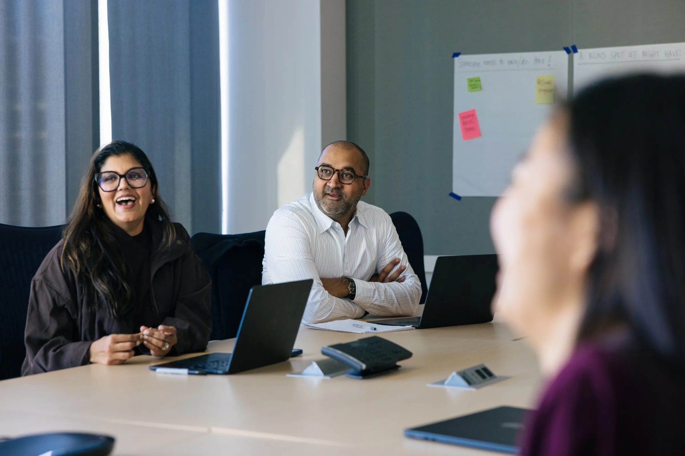
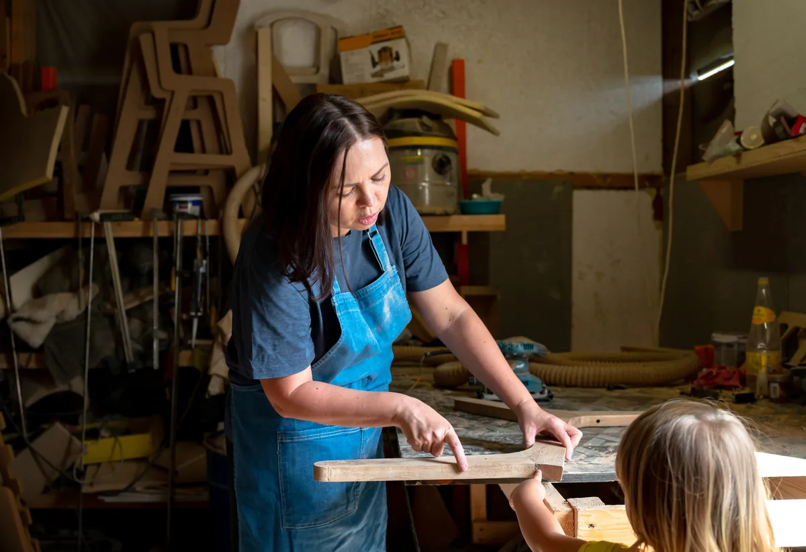
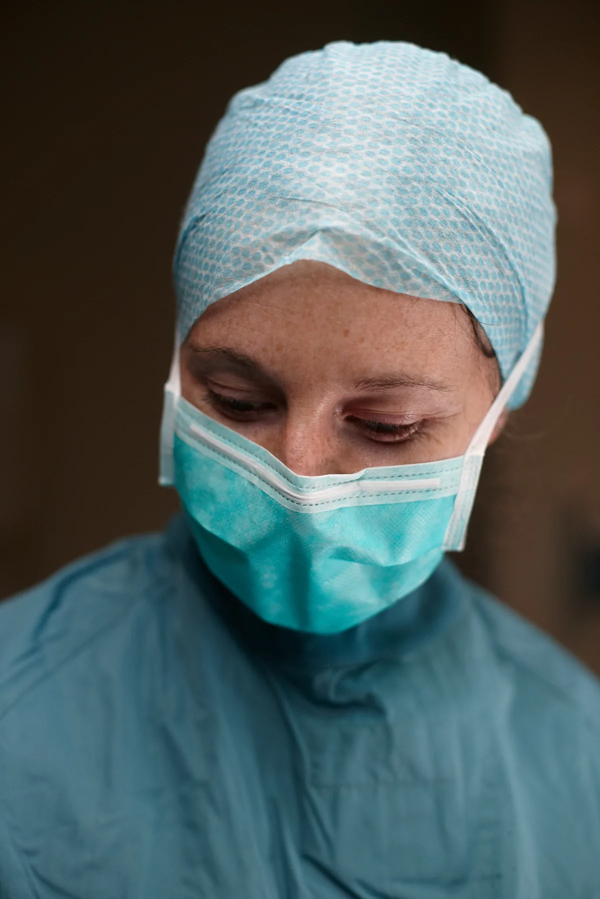
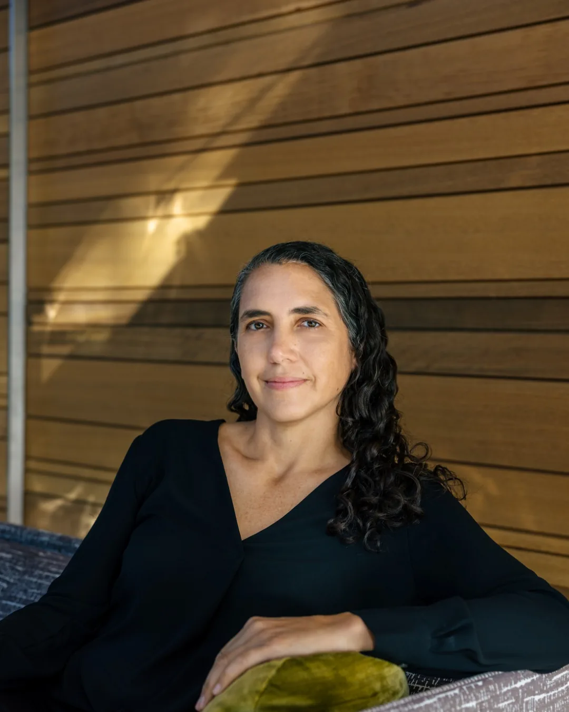
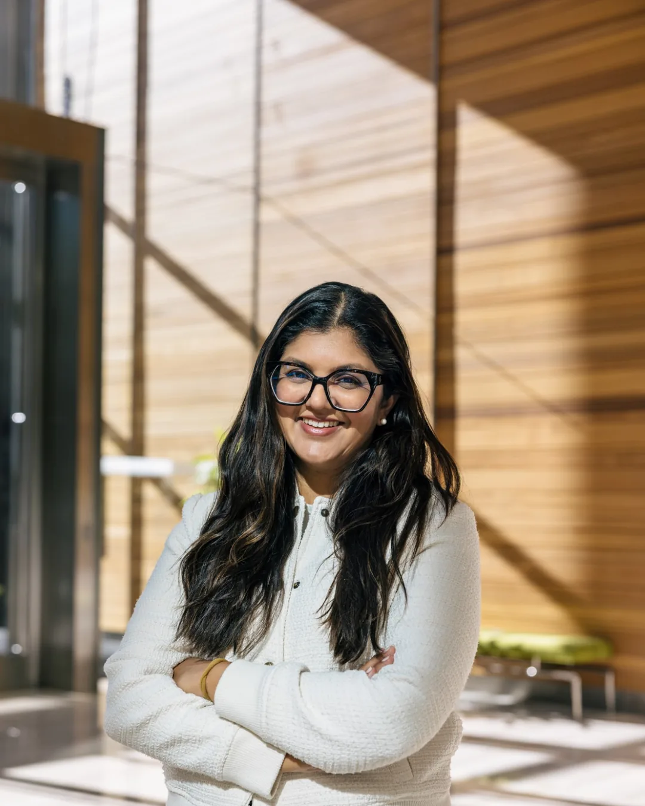
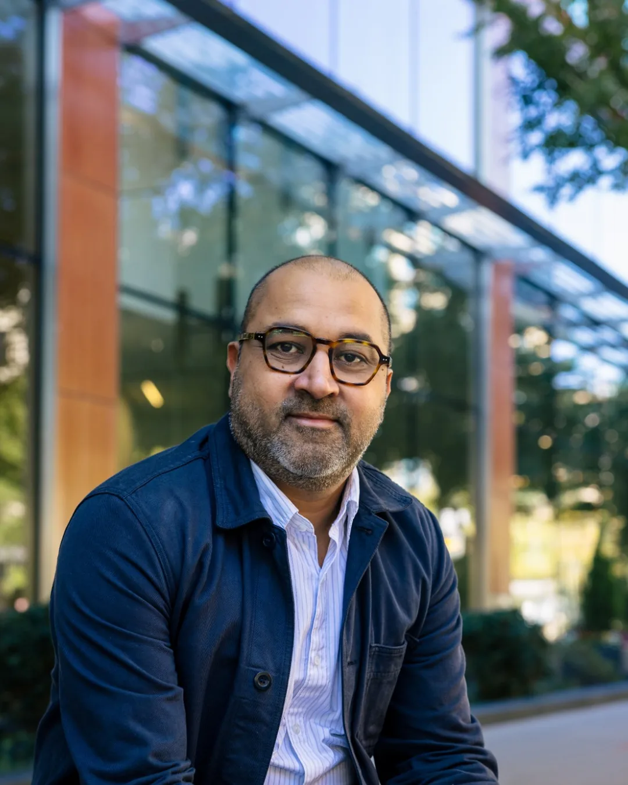
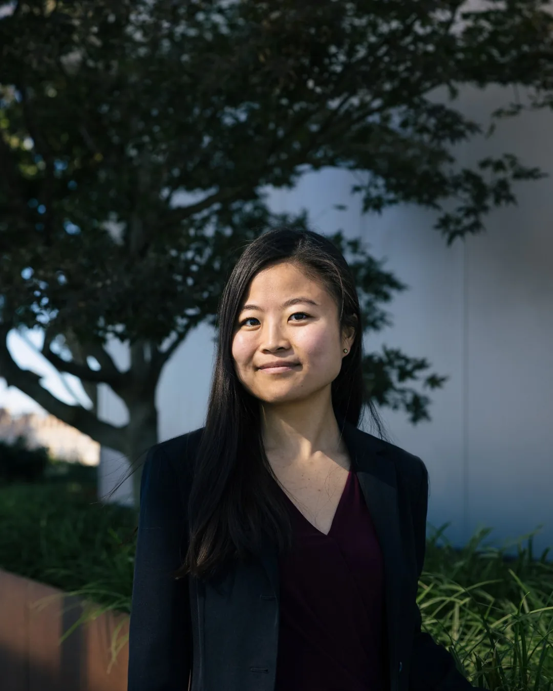
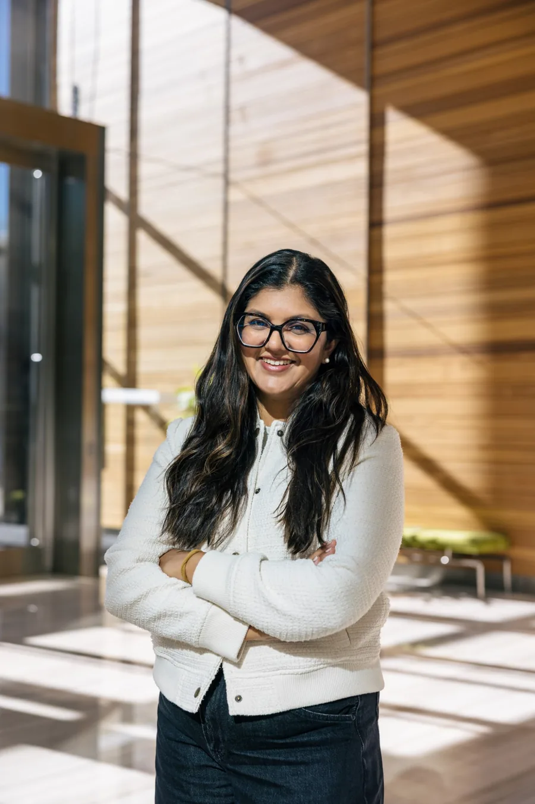

We’re working to ensure AI’s transformation of work isn’t at odds with American livelihoods.

Independent and nonpartisan, Breakwater pioneers solutions, builds public momentum, and will co-create a vision for the future of work that AI’s transformation demands.

Joining forces with the best minds tackling this challenge to ideate, test, scale and pitch what works together.
Molly Kinder is the founding CEO of the Breakwater Initiative. Over 25 years, she has navigated Washington as a policymaker, researcher, and organization builder, from the Obama Administration to co-founding a $200 million social impact fund. Most recently, she was a Senior Fellow at the Brookings Institution, where she led research on how AI is transforming work and what to do about it. Her work has shaped federal policy, moved more than $1 billion in public investment, and reached more than two million workers. Governors, White House advisers, members of Congress, labor leaders, and people inside the frontier AI labs regularly call on her for answers. Molly co-chairs Governor Hochul’s FutureWorks Commission and serves on Governor Newsom’s Innovation Council. She holds an MPA/ID from Harvard Kennedy School and a B.A. from Notre Dame.

Gretchen has dedicated her career to building organizations that advance a more equitable economy. Her work spans technology, economic policy, and community development, with a focus on translating ambitious ideas into high-impact policies, programs and institutions. She was previously at Omidyar Network, where she led the Reimagining Capitalism portfolio, incubated large scale partnerships, and served as COO. While living in Asia, she was CEO of GenerationHope, the Philippines’ first Certified B Corporation; led strategy at PRADAN, which advances the economic and political empowerment of women across rural India and helped build McKinsey’s Social Sector Office. Gretchen has served as an appointee at the State Department, and sits on the boards of BuildUS, Aceli Africa, Global Development Incubator, and Friends of Hope. She holds degrees from Harvard Kennedy School and Duke University.

Palak Shah has spent her career inventing new ways to make work better for people. For over a decade, she was a senior executive at the National Domestic Workers Alliance, where she helped win 12 state laws and founded NDWA Labs. There, she built a novel 200,000-worker dataset and launched a $30 million pandemic fund that became a model for mayors nationwide. She is a Senior Fellow at MIT's Institute for Work and Employment Research. Her work has been featured in The New York Times, Stanford Social Innovation Review, and Fast Company. She previously held leadership roles in Governor Deval Patrick's administration, a hospital system in Appalachian coal country, and Accenture Strategy. She holds an MPP from Harvard Kennedy School and a BS from Northwestern University.

Anmol Chaddha is a policy expert on economic inequality, jobs and work, with a particular focus on technological change. He previously led a program on AI and workers/jobs at the Omidyar Network and managed the California Future of Work Commission, created by Governor Gavin Newsom to develop a broad agenda promoting economic equity. Anmol has extensive experience in policy and social science on economic inequality, racial inequality, low-wage work, job quality, debt, and wealth. He developed policy and research on economic inequality at the Federal Reserve Bank of Boston. He holds a PhD from Harvard, where he was a Fellow in Inequality and Social Policy at the Harvard Kennedy School, and a B.A. in Economics from the University of California, Berkeley.

Mayu is a policy strategist with experience helping state and regional leaders build durable cross-sector solutions that expand economic opportunity. At Breakwater, she helps lead R&D to design and test new approaches, including around how young people build expertise and pursue meaningful careers as AI reshapes entry-level work. Previously at Brookings Metro, she co-authored a playbook for governors and legislators on strengthening state-regional economic development, informed by fieldwork with hundreds of leaders across more than a dozen states. Her work spanned place-based industrial policy, workforce development, and inclusive regional economic growth. She graduated from Princeton’s School of Public and International Affairs with a bachelor’s degree in public policy.

Diana brings experience from management consulting, government and political campaigns. In BCG's federal practice, she worked with large federal agencies in public health, finance, state and regional transportation, and defense to develop transformation strategies across technology, procurement, operating model, and strategic planning. She also interned on the economic policy team for the Biden for President and Harris for President 2024 presidential campaigns and at the White House National Economic Council, where she focused on industrial strategy and place-based economic development. Diana graduated with a bachelor's degree in political science and economics from the Massachusetts Institute of Technology.
Sam joins Breakwater as Special Assistant for Economic Policy, where he leads the development of tax and fiscal policy initiatives. Previously, he researched public economics at the Brookings Institution and the University of Chicago, publishing papers on corporate taxation, fiscal consolidations, and inequality measurement. He has consulted on tax and industrial policy for local governments and national campaigns in the US and UK, and presented research at top professional conferences including the National Tax Association and ASSA Annual Meetings. Sam graduated summa cum laude from Williams College, where he won the Carl Van Duyne prize in economics, and earned master’s degrees from the London School of Economics and the University of Manchester, where he was a Marshall Scholar.
Eilis Klein is an experienced and trusted staffer from the non-profit and philanthropic space. Eilis is currently the special assistant to Breakwater Initiative’s CEO Molly Kinder. Previously, Eilis was special assistant to Mark Malloch-Brown, first in the executive office at the Open Society Foundations and then as the project manager for the BWI at 80 Initiative. Eilis graduated with a B.A. from Connecticut College and an M.P.A. from the Wagner School at New York University.
Is there an optimal speed of displacement, and how can we set it? If China is proactively managing the pace of dislocation, what are the best ways for the US to lead on this? What levers work best, what are the tradeoffs, and what frictions genuinely protect vs delay the inevitable?
Our work
We are collaborating with several leading economists on this question and plan to put out some policy ideas.
Placeholder answer.
Placeholder answer.
Placeholder answer.
Placeholder answer.
Placeholder answer.
Policy takes time. If we don’t act now, we will miss the window of opportunity. To invest, collaborate or find out more, get in touch.
Contact us